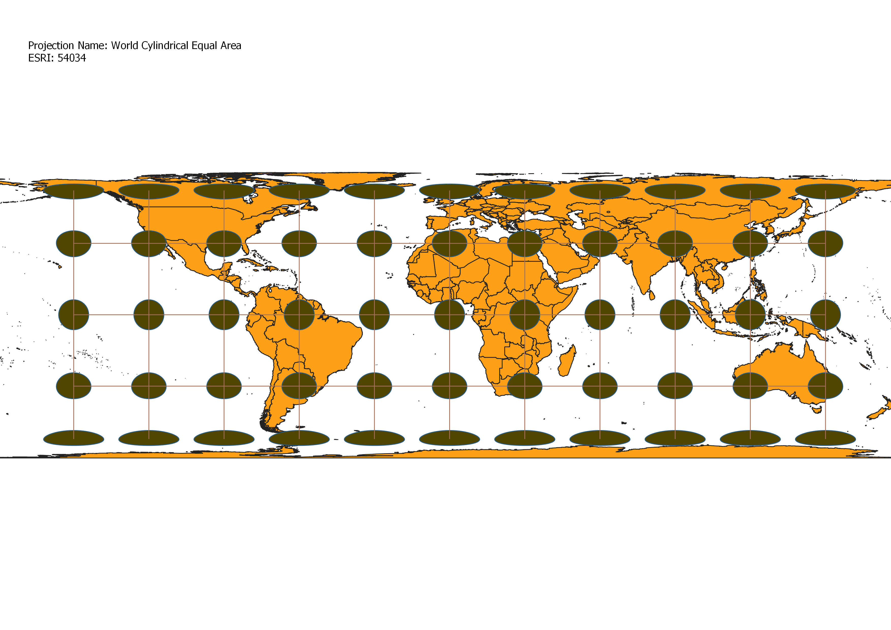

In this project I learned how to display images in different projections
Using the data provided, I opened the world map in QGIS.
I then added the Indicatrix Mapper plugin so that I could use Tissot's indicatrix elipses to test the distortion of each map.
Once the plugin was added, I changed the projection to various different world projections in order to examine the affect each projection has on the map.
While keeping the background color set, I experiemented with adding different colors and patterns to the Tissot's indicatrix circles to see which allowed for the best visual representation of distortion.
WGS84 Projection
This projection is accurate around the equator, but distortion is evident at the poles, where the Tissot's indicatrix circles are stretched.
As you look farther to the North and South the circles become Ellipses, as the land is made to look much wider than it is in reality.
This would be a good map to examine area near the equator, but a poor projection if you are in the arctic.

Pseudo Mercator
This projection looks very familiar, as it is commonly used in schools. It's easily recognizable.
Along the equation there is very little distortion, and size relationships are relatively normal.
However, the Tissot's indicatrix circles at the poles are stretched, indicating serious distortion there.
This is evident when looking at the size of Greenland and Antarctica, both of which are actually smaller than the continent of Africa.
Aitoff Projection
The Aitoff Projection utilizes an ellipse rather than a rectangle to display the Earth.
The result is that instead of being most accurate along a line of latitude
like the WGS84 Projection or the Pseudo Mercator Projection it has a most accurate line of longitude.
It is most accurate along the center line of longitude, which falls over Western Africa and Europe, and becomes more distorted as you look farther to the East and West.

Sphere Winkel 1
I experimented with using cross-hatched marks as a pattern with the circles to helping to take a better look at distortion. This map experiences distortion at all edges,
with the North, South, East, and West all being stretched in their respective directions.
However, the circles are still circular for the most part, indicating that while distance and area will not always be accurately represented, angles will be fairly accurate.
World Cylindrical Equal Area
The middle three rows of Indicatrix circles are very similar in size and shape, but distortion is evident
to the North and South, as the circles are flattened. One advantage of this map is that going East and West does
not appear to affect the distortion of the map.

World Equidistant Conic
This map is most accurate in the northern hemisphere, as evidenced by the serious size increase in the Tissot's Indicatrix circles in the southern hemisphere.
This map would be most useful for people living in or near the arctic circle, as that is where the map is most accurate.
There is a section of white space, which may look odd at first glance, but it slightly more accurate because of that white space.
The projection following this is the North Pole Azimuthal Eqidistant projection, which covers that white space, and is less accurate.
North Pole Azimuthal Equidistant
As indicated by its name, this projection is most accurate at the North pole. As a viewer goes further south accuracy is lost.
The indicatrix circles are significantly larger near Antarctica, showig a serious size distortion issue in the southern hemisphere.
This projection does not have the missing white space that the World Equidistant Conic map has, and has become slightly more distorted as it stretches to cover that space.
South Pole Azimuthal Equidistant
This projection has the opposite effect of the North Pole Azimuthal Equidistant Projection.
It is most accurate at the south pole, and loses accuracy as the viewer looks farther north. This map would be best used by those in the southern hemisphere, particularly those in close proximity to the south pole.
GCS European 1979
This projection is most accurate at the equator. Size becomes more distorted the farther North and South the viewer chooses to look. The circles do retain their circular shape, indicating that while size is distorted, angles will largely be accurate.
Now, you should add the following projections on your own:
EPSG: 3857, 53018, 54034, 54027, 102016, and two additional projections that you choose.
Data used for this project
Download Natrual Earth 1:10m Cultural Vector